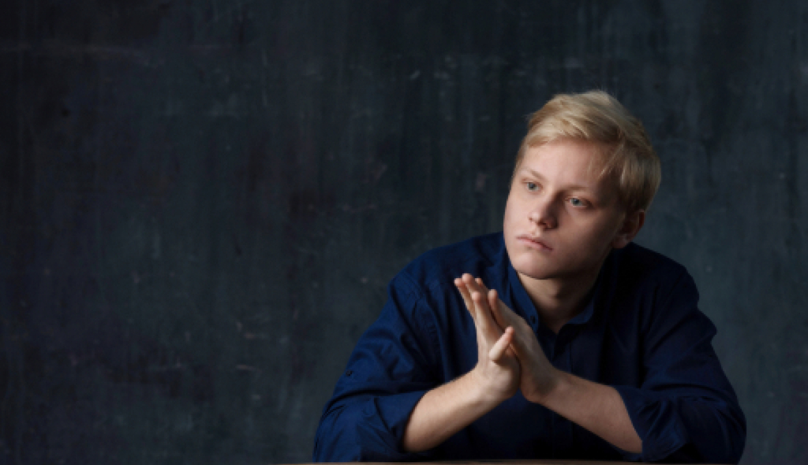

О последних прямых трансляциях Григория Соколова, Sondra Radvanovsky, Piotr Beczala, Britten Sinfonia и Александра Малофеева
... Они продолжают появляться, также как и раньше, начиная… Когда это началось? Во второй половине 19-го века? Речь идет о русских пианистах-виртуозах, и слава богу, что они появляются. Последний такой музыкант – Александр Малофеев, 19 лет. Недавно он играл концерт с Симфоническим оркестром Испанского радио и телевидения в Мадриде. Дирижировал маэстро Джордж Пехливанян, американец французского происхождения, который родился в Бейруте в семье с армянскими корнями (нетривиальная история идентичностей). Юный Малофеев был в черной маске во время концерта, она постоянно сползала, как это и бывает, а он все время ее поправлял. Дирижер также был в маске, как и другие члены оркестра, без нее выступали только духовики.
Играли второй концерт Сен-Санса соль-минор. Над этим произведением часто подшучивают, как говорится «начали Бахом, закончили Оффенбахом» (шутку придумал Зигмунд Стойовский, польский пианист и композитор, живший в 1870-1946 гг.). Но музыкантам и зрителям всегда нравился этот концерт. Его сделал популярным Артур Рубинштейн, а Александр Малофеев… довел его до совершенства. Я вполне в этом уверен, и поспорил бы на свои деньги, что Рубинштейн бы со мной согласился.
Первые ноты в исполнении Малофеева были весомыми, звучными (важными). Следующие за ними страницы звучали выверенно и ловко. Первую часть он играл виртуозно (легко), красиво, по-взрослому. Вы бы забыли, что слушаете очень молодого музыканта. Его правая рука пела, а левая подпевала, игра была чистой и прозрачной. Трели были образцовыми – нежными, плавными. Он знал, где выдержать паузы. Он был самой музыкой.
Вторую часть многие считают pièce de résistance (главным номером программы). Это скерцо, и для Малофеева его словно прописал доктор - быстрое, искрящееся, элегантное. И еще веселое. Малофеев знает, что музыка не должна быть плохим китчем. Заключительное Presto он сыграл с рапсодийной стремительностью. При этом никогда не стучал по клавишам, даже когда играл громко, очень громко. Ни одна его нота не звучала вульгарно, а музыка была захватывающей и при этом по-французски элегантной.
В конце Малофеев, дирижер и концертмейстер вместо рукопожатий коснулись друг друга предплечьями. После этого были еще два биса, очень красивые произведения российских композиторов: «Сирень» Рахманинова и Па-де-де из балета Чайковского «Щелкунчик» в обработке Михаила Плетнева. Малофеев играл их чутко и душевно.
Так что да, он один из них. Я надеюсь, что публика сможет слушать Александра Малофеева, учиться у него и восхищаться еще долгие годы.